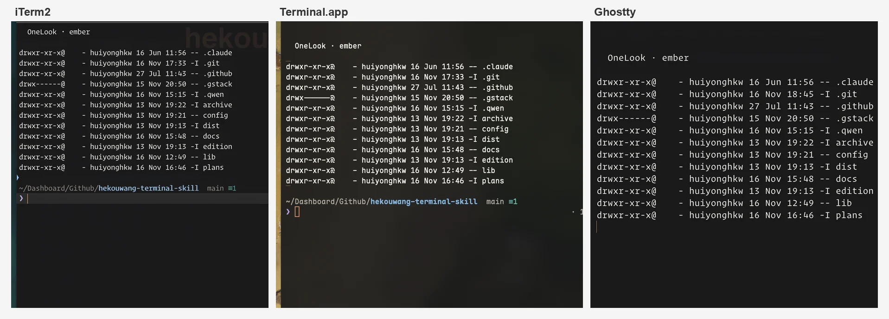
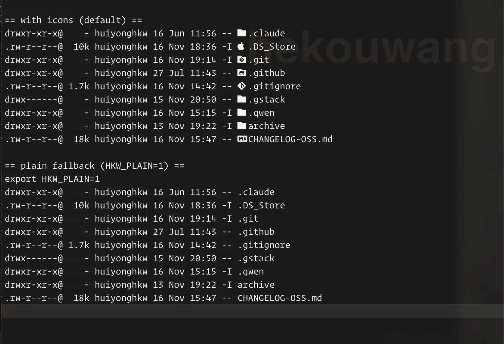
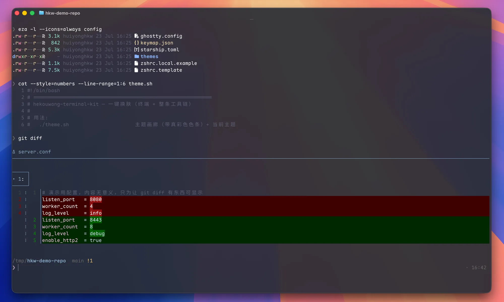
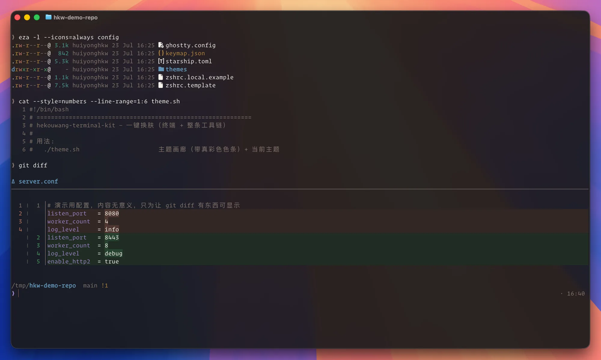

Terminal coverage终端覆盖
iTerm2 · Ghostty · Warp · cmux · Tabby · macOS Terminal.app — one palette, six apps. iTerm2 / Ghostty / Terminal.app get all 7 factory themes; Warp and Tabby get 5/7; cmux follows the sidebar only. Free configures iTerm2; paid makes the others follow.iTerm2 · Ghostty · Warp · cmux · Tabby · macOS 自带终端 —— 一份色板，六个 App。iTerm2 / Ghostty / 自带终端覆盖全部 7 套；Warp / Tabby 各 5/7；cmux 只跟随侧栏。Lite 版配好 iTerm2；专业版让另外五个跟着走。

eza listing. Warp and Tabby cover 5 of 7 themes; cmux follows the sidebar only — neither is in this shot. Shot on the development machine, not a clean install.真机截图：iTerm2、Terminal.app、Ghostty 三端，同一份 ember 色板、同一份 eza 目录列表。Warp / Tabby 覆盖 5/7 主题，cmux 只跟随侧栏，因此未纳入；截图来自开发机，不是干净安装环境。
theme.sh <theme> --plain sets HKW_PLAIN=1 and drops eza icons, so a machine with no Nerd Font still reads cleanly. Simulated on this machine.纯文本降级：theme.sh <主题> --plain 写 HKW_PLAIN=1，关闭 eza 图标；没有 Nerd Font 的机器也能读。本机模拟。Who gets what谁拿到什么
| LiteLite 版 | Paid专业版 | |
|---|---|---|
| iTerm2 | Full setup: themes · blur · Triggers · semantic · CLI · doctor整套：主题 · 毛玻璃 · Triggers · 语义 · CLI · 体检 | Same + brand themes · optical · scene同上 + 品牌主题 · 光学 · 场景 |
| Ghostty | Untouched (keeps its own themes)不动（继续用自带主题） | Same palette as iTerm2 on ./scripts/theme.sh./scripts/theme.sh 时与 iTerm2 同色 |
| Warp | Untouched不动 | Same palette YAML + active theme pin同色 YAML + 钉住当前主题 |
| cmux | Untouched不动 | Same palette via Ghostty engine + sidebar follows terminal background走 Ghostty 渲染同色 + 侧栏背景跟随终端 |
| Tabby | Untouched不动 | Same palette in config.yaml + font / Symbols fallback + scene vibrancy同色写进 config.yaml + 字体 / Symbols 兜底 + 场景透明度 |
| Terminal.app | Untouched不动 | Same palette as default Profile + scene blur/opacity同色写进默认 Profile + 场景毛玻璃/透明度 |
| Tool chain工具链 bat / fzf / eza / delta / tmux / VS Code |
Each keeps factory colors各自出厂色 | Generated from the same palette同一份色板生成 |
Ghostty already ships hundreds of built-in themes. What you buy is not “give Ghostty themes” — it is the same source as your iTerm2, so changing once does not leave five apps and six tools speaking different dialects.Ghostty 自带几百套主题。买的不是「给 Ghostty 塞主题」—— 是与 iTerm2 同源，换一次不会留下五个 App、六种工具各说各话。


Per terminal逐个终端
Cmd+Shift+, to reload — a new tab alone is not enough. No Triggers / semantic / badge here.换肤时同步配色。配置不会保存即生效：按 Cmd+Shift+, 重载 —— 只开新标签不够。没有 Triggers / 语义 / 水印。sidebarAppearance.matchTerminalBackground so the left sidebar does not stay a grey block. Reload cmux after ./scripts/theme.sh if the sidebar looks stale.终端区走 Ghostty 渲染，配色跟 Ghostty 同步。会勇禾口王·终端工作台还会钉 sidebarAppearance.matchTerminalBackground，避免左侧灰块跟终端割裂。侧栏没跟上就重启 cmux。terminal.colorScheme, main font, Symbols Nerd Font fallback, and scene-driven appearance.vibrancy / opacity into ~/Library/Application Support/tabby/config.yaml. Quit Tabby fully after a theme or scene change — vibrancy does not hot-reload.写 terminal.colorScheme、主字体、Symbols 兜底，以及场景驱动的 appearance.vibrancy / opacity 到 config.yaml。换肤或切场景后完全退出 Tabby —— Vibrancy 不会热加载。How it feels day to day日常怎么用
On the Pro build, ./scripts/theme.sh (picker or by name) is one command across the terminal matrix you have installed, plus the tool chain. Lite still uses the same command — it only touches iTerm2. Fuzzy pick + ANSI preview work the same either way; see Themes & auto.专业档里，./scripts/theme.sh（选肤或按名）一条命令覆盖你已装的终端矩阵 + 工具链（覆盖见本页表，非每端 7/7）。Lite 版命令相同 —— 只动 iTerm2。模糊选 + ANSI 预览两边一样；见换肤与跟随。
./scripts/doctor.sh --status surfaces Ghostty “config newer than process” so you know to reload. Details: Doctor../scripts/doctor.sh --status 会标出 Ghostty「配置比进程新」，提醒你去重载。明细见体检。